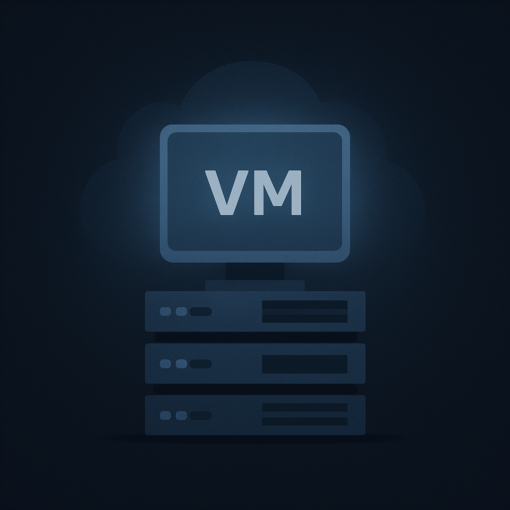

Maquinas virtuales
Con nuestro servicio de Máquinas Virtuales, te ofrecemos acceso a servidores virtuales con recursos dedicados (CPU, RAM, disco). Tú controlas completamente el sistema operativo y todo el software que instalas. Es ideal para migrar tus servidores actuales a la nube o para tener un control granular sobre tu entorno de computación.